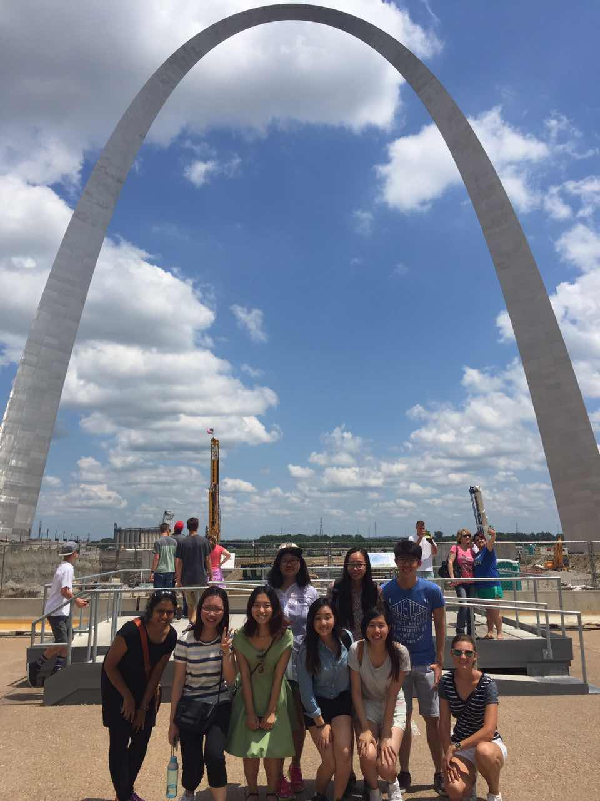
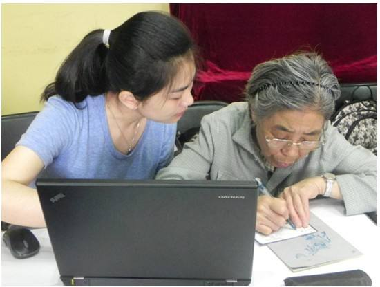
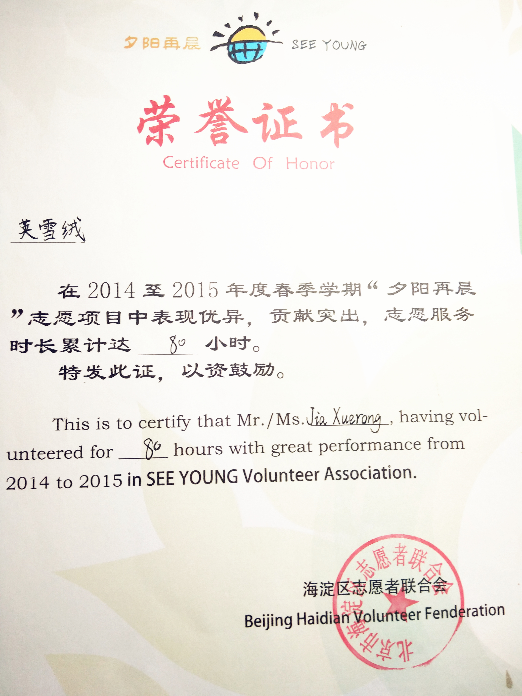

Xuerong Jia ( sharon )
Economics major, always fast-learning, self-motivated andprepare to meet challenges.
Good practice with analytics tool and language JAVA SE, SQL, SPSS, Tableau etc.
Strong interests in information management and data analysis.

Professional Experience
Business data analyst Intern
2016.09-2016.12
NovoNordisk Pharmaceuticals Co, Commercial Department
- -Skilled use of Excel, PPT to work outfundamental worksheets and monthly graphical reports, providing data analysisto support management decision-making.
- -Summarize annual sales flow data in Access,reinterpret it in multiple perspectives and forecast next year’s target salesindex.
- -Find current problems, discuss with projectmanagers for optimal solutions and submit the results.

Academic Experience
International Visiting Student in Washington University in St. Louis (WUSTL)

Prizes
1st prize in Chinese Mathematic Competitions (CMC) in Beijing ( top 2.5% )
Strength lies in mathcompetitions，which encourage my passion for solving problems andenlighten my talents in logic thinking.

Extracurricular activities
Community volunteer
2014.11-2015.07
IT educational program for the aged-“See Young”
-Provide customized IT-driveninstructive service for the aged in Mudanyuan Community and let them can enjoythe benefits of an intelligent and convenient life.
-Pass on a kindness and in turnimprove communication skills


Honored “Outstanding Volunteer in See Young” in 2015
Scholarships
2015&2016
Consecutively awarded “Triple-A Student” honors in department
Certificates
1. An Introduction to Interactive Programming in Python (Part 1 and Part 2) by Rice University on Coursera.
【Description】
The primary method for learning the course material will be to work through multiple “mini-projects” in Python. To make this class enjoyable, these projects will include building fun games such as Pong, Blackjack, and Asteroids. When you’ve finished our course, we can’t promise that you will be a professional programmer, but we think that you will learn a lot about programming in Python and have fun while you’re doing it.
The final grade was based on a weighted combination of one-third of the quiz scores and two-thirds of the mini-project scores (each scaled to 100).
Certificate earned on July 12, 2015 and August 16, 2015
2. Introduction to Programming with MATLAB
【Description】
It is an introductory programming course that happens to use MATLAB to illustrate general concepts in computer science and programming.
Students who successfully complete this course will:
- become familiar with general concepts in computer science
- gain an understanding of the general concepts of programming
- obtain a solid foundation in the use of MATLAB
3. Statistics & SPSS
【Description】
Certificate earned on November 9, 2015
3. Mastering Data Analysis in Excel
【Description】
Certificate earned on April 15, 2016
4. Data Visualization and Communication with Tableau
【Description】

Completed by 雪绒 荚 on May 28, 2016
5. Business Metrics for Data-Driven Companies
【Description】
Completed by 雪绒 荚 on May 28, 2016
####